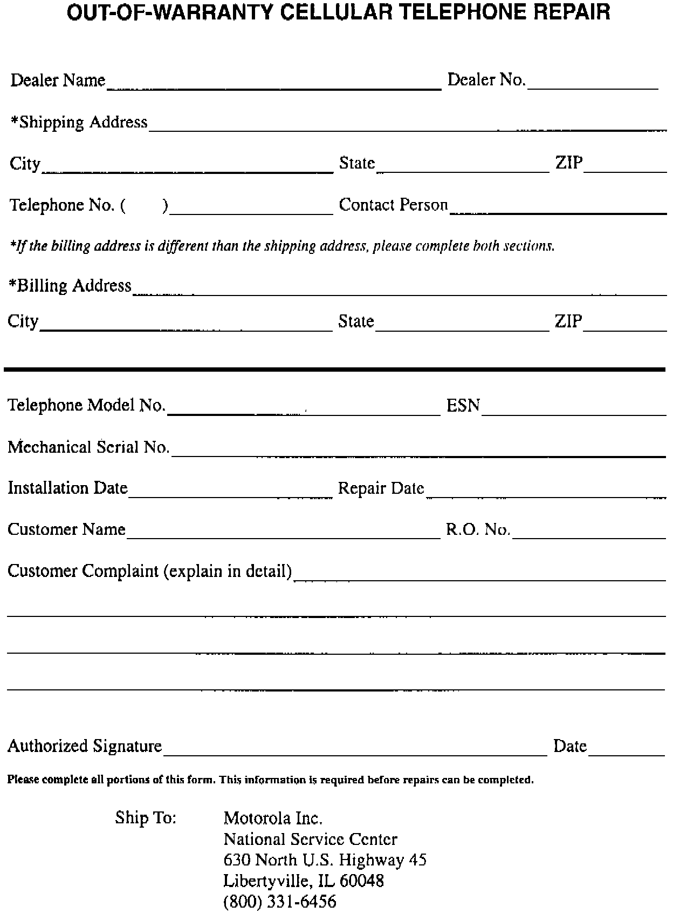

Cellular Telephone - Repair Procedure
September 20, 1994BULLETIN
94-012
YEAR
1991
AND LATER
MODEL
LEGEND
VIGOR
NSX
VIN APPLICATION
ALL WITH THE
OPTIONAL ACURA
CELLULAR TELEPHONE
Out-of-Warranty Cellular Telephone Repair
A program has been established for the repair of cellular telephone components that are no longer in warranty. It applies only to the repair of handsets and transceivers. Any other cellular telephone component that fails should be considered unrepairable, and you should order a replacement component.
You will deal directly with Motorola, the manufacturer, for handset and transceiver repair. Only 1991 and later Acura cellular telephones are subject to this program.
PROCEDURE
Once you have verified a customer's complaint of a malfunctioning cellular telephone, remove the defective component from the vehicle. Pack the component carefully, include the proper paperwork, and ship it to the Motorola Service Center (see SHIPPING PROCEDURE).
The component will be repaired or exchanged by Motorola, and shipped back within 10 calendar days of its receipt by Motorola. The repair is guaranteed by the service center for 90 days from the date of repair.
SHIPPING PROCEDURE

1. Complete an Out-of-Warranty Cellular Telephone Repair form (E2200) and ship it with the defective telephone component.
2. Include a dealership check for the repair and return shipping cost of $76.50 (no personal checks).
NOTE:
Include a copy of your tax-exempt certificate the first time you ship a cellular telephone component to Motorola. They will keep it on file for verification of future shipments.
3. Pack the component carefully so it will not be damaged during shipping.
4. Ship the package to:
Motorola Inc.
National Service Center
630 North U.S. Highway 45
Libertyville, IL 60048
Once Motorola has repaired the telephone, it will be shipped back to you via Federal Express Next Day service. Included will be a packing list that details the repairs performed.
^ Telephones sent without an Out-of-Warranty Cellular Telephone Repair form, or with incomplete information, will be held until proper information is received.
^ Telephones sent without a check will be returned unrepaired.
Motorola will log and track all cellular telephones by mechanical serial number. You may inquire about the status of a phone that is in for repair by calling Motorola at (800) 331-6456.
TELEPHONES RECEIVED DAMAGED
Telephones that are damaged, either during shipping or by misuse, cannot be:
^ Repaired or exchanged for the fixed price listed under SHIPPING PROCEDURE.
^ Shipped back to you within the normal ten-day turnaround time.
Motorola will inspect the damage, and you will be given an estimate of any additional charges.
If you approve the estimate, mail a check for the additional charges to the Service Center. If you do not approve the estimate, the telephone will be returned to you. Motorola will issue you a refund check at the end of the current month.